Exploration of the LPS DEA
Pierre-Luc Germain
Institute for Molecular Life Sciences, University of Zurich, SwitzerlandHelena L. Crowell
Institute for Molecular Life Sciences, University of Zurich, SwitzerlandJuly 10, 2019
Last updated: 2019-07-10
Checks: 5 2
Knit directory: MAGL/
This reproducible R Markdown analysis was created with workflowr (version 1.4.0). The Checks tab describes the reproducibility checks that were applied when the results were created. The Past versions tab lists the development history.
The R Markdown file has unstaged changes. To know which version of the R Markdown file created these results, you’ll want to first commit it to the Git repo. If you’re still working on the analysis, you can ignore this warning. When you’re finished, you can run wflow_publish to commit the R Markdown file and build the HTML.
The global environment had objects present when the code in the R Markdown file was run. These objects can affect the analysis in your R Markdown file in unknown ways. For reproduciblity it’s best to always run the code in an empty environment. Use wflow_publish or wflow_build to ensure that the code is always run in an empty environment.
The following objects were defined in the global environment when these results were created:
| Name | Class | Size |
|---|---|---|
| data | environment | 56 bytes |
| env | environment | 56 bytes |
The command set.seed(20190311) was run prior to running the code in the R Markdown file. Setting a seed ensures that any results that rely on randomness, e.g. subsampling or permutations, are reproducible.
Great job! Recording the operating system, R version, and package versions is critical for reproducibility.
Nice! There were no cached chunks for this analysis, so you can be confident that you successfully produced the results during this run.
Great job! Using relative paths to the files within your workflowr project makes it easier to run your code on other machines.
Great! You are using Git for version control. Tracking code development and connecting the code version to the results is critical for reproducibility. The version displayed above was the version of the Git repository at the time these results were generated.
Note that you need to be careful to ensure that all relevant files for the analysis have been committed to Git prior to generating the results (you can use wflow_publish or wflow_git_commit). workflowr only checks the R Markdown file, but you know if there are other scripts or data files that it depends on. Below is the status of the Git repository when the results were generated:
Ignored files:
Ignored: .DS_Store
Ignored: ._.Renviron
Ignored: ._.gitignore
Ignored: ._README.md
Ignored: ._Snakefile
Ignored: .snakemake/
Ignored: MAGL/.DS_Store
Ignored: MAGL/.RData
Ignored: MAGL/.Rhistory
Ignored: MAGL/._.DS_Store
Ignored: MAGL/._.Rprofile
Ignored: MAGL/._.gitignore
Ignored: MAGL/._data
Ignored: MAGL/analysis/._refs.bib
Ignored: MAGL/analysis/0-preprocessing_cache/
Ignored: MAGL/analysis/1-clustering_cache/
Ignored: MAGL/analysis/3-differential_cache/
Ignored: MAGL/analysis/4-visualization_cache/
Ignored: MAGL/analysis/5-geneset_cache/
Ignored: MAGL/data/
Ignored: MAGL/output/
Ignored: data/sim_data/
Ignored: figures/
Ignored: meta/
Ignored: results/
Ignored: scripts/._apply_scdd.R
Ignored: scripts/._fig_vehicle_vs_lps.R
Ignored: scripts/._plot_perf_by_expr.R
Ignored: scripts/._plot_perf_by_lfc.R
Ignored: scripts/._plot_perf_by_ss.R
Ignored: scripts/._plot_runtimes.R
Ignored: scripts/._plot_sim_ex.R
Ignored: scripts/._sim_qc.R
Untracked files:
Untracked: .RData
Untracked: .RDataTmp
Untracked: .Rhistory
Untracked: MAGL/current
Untracked: scripts/fig_vehicle_vs_lps.R
Unstaged changes:
Modified: MAGL/.Rprofile
Modified: MAGL/analysis/0-preprocessing.Rmd
Modified: MAGL/analysis/1-clustering.Rmd
Modified: MAGL/analysis/2-annotation.Rmd
Modified: MAGL/analysis/3-differential.Rmd
Modified: MAGL/analysis/6-more.Rmd
Modified: scripts/utils.R
Note that any generated files, e.g. HTML, png, CSS, etc., are not included in this status report because it is ok for generated content to have uncommitted changes.
These are the previous versions of the R Markdown and HTML files. If you’ve configured a remote Git repository (see ?wflow_git_remote), click on the hyperlinks in the table below to view them.
| File | Version | Author | Date | Message |
|---|---|---|---|---|
| html | ada6ab0 | Pierre-Luc Germain | 2019-07-08 | more analysis on LPS dataset… |
| Rmd | 6bdee2f | Pierre-Luc Germain | 2019-07-08 | some further analysis on the LPS dataset… |
Load packages
library(AnnotationDbi)
library(circlize)
library(ComplexHeatmap)
library(dplyr)
library(edgeR)
library(ggplot2)
library(M3C)
library(msigdbr)
library(muscat)
library(RColorBrewer)
library(SingleCellExperiment)
library(topGO)
library(org.Mm.eg.db)
library(purrr)Load data & results
sce <- readRDS(file.path("output", "MAGL-SCE.rds"))
res <- readRDS(file.path("output", "MAGL-DS_res.rds"))
# store gene symbols & feature names
ss <- strsplit(rownames(sce), ".", fixed = TRUE)
rowData(sce)$symbol <- sapply(ss, .subset, 1)
rowData(sce)$feature <- sapply(ss, .subset, 2)For easy accession, we store the character vectors of cluster and sample IDs, as well as the number of clusters and samples:
nk <- length(kids <- set_names(levels(sce$cluster_id)))
ns <- length(sids <- set_names(levels(sce$sample_id)))
ng <- length(gids <- set_names(levels(sce$group_id)))# aggregation to pseudobulk sum-counts
pb <- aggregateData(sce, assay = "counts", fun = "sum")# construct SCE containing logFCs for ea. cluster
ref <- pb$group_id == "WT"
lfc <- lapply(assays(pb), function(u) {
y <- DGEList(u)
y <- calcNormFactors(y)
lcpm <- log1p(cpm.DGEList(y))
lfc <- lcpm - rowMeans(lcpm[, ref])
SingleCellExperiment(lfc, colData = colData(pb))
}) %>% do.call(what = cbind)
lfc$cluster_id <- rep(assayNames(pb), each = ns)# round limits of x to nearest n
.get_brks <- function(x, n) {
n <- 1 / n
min <- floor(min(x) * n) / n
max <- ceiling(max(x) * n) / n
c(0, min, max)
}
# color palettes for heatmap, cluster, sample, group IDs, and # cells
hm_cols <- c("grey95", "blue", "red")
kcols <- set_names(CATALYST:::.cluster_cols[seq_len(nk)], kids)Registered S3 methods overwritten by 'car':
method from
influence.merMod lme4
cooks.distance.influence.merMod lme4
dfbeta.influence.merMod lme4
dfbetas.influence.merMod lme4scols <- set_names(CATALYST:::.cluster_cols[seq_len(ns) + nk], sids)
gcols <- set_names(c("royalblue", "orange"), gids)
n_cells <- c(t(metadata(pb)$n_cells))
max <- .get_brks(n_cells, 100)[3]
ncols <- colorRamp2(c(0, max), c("white", "black"))
# column annoation
col_df <- data.frame(n_cells,
cluster_id = rep(kids, each = ns),
group_id = rep(pb$group_id, nk))
col_cols <- list(
n_cells = ncols, cluster_id = kcols,
sample_id = scols, group_id = gcols)
col_anno <- HeatmapAnnotation(
df = col_df, col = col_cols,
show_annotation_name = FALSE)
# heatmap wrapper
.plot_hm <- function(sce, col, brks, col_anno = NULL, row_anno = NULL,
row_split = NULL, row_nms = FALSE, col_title = NULL, ...)
Heatmap(assay(sce), col, name = "logFC",
column_title = col_title, cluster_columns = FALSE,
show_row_names = row_nms, show_column_names = FALSE,
show_row_dend = FALSE, show_column_dend = FALSE,
row_split = row_split, column_split = sce$cluster_id,
top_annotation = col_anno, left_annotation = row_anno,
heatmap_legend_param = list(at = brks),
row_names_side = "left", ...)Comparison across cell types
Q1: To what extent are the changes shared or cell-type specific?
In order to be able to asses the overlap and magnitude of changes across cell types independent of variations in the significance, we plot a heatmap of the logFC, in each cell type, of the union of differentially-expressed genes:
# get DE genes for ea. cluster
tbl <- res$table[[1]]
tbl_fil <- lapply(tbl, filter, p_adj.loc < 0.01, abs(logFC) > 1)
de_gs_by_k <- map(tbl_fil, pull, "gene")
de_gs <- unique(unlist(de_gs_by_k))Consensus clustering of genes
cc <- M3C(t(assay(lfc[de_gs, ])), method = 2)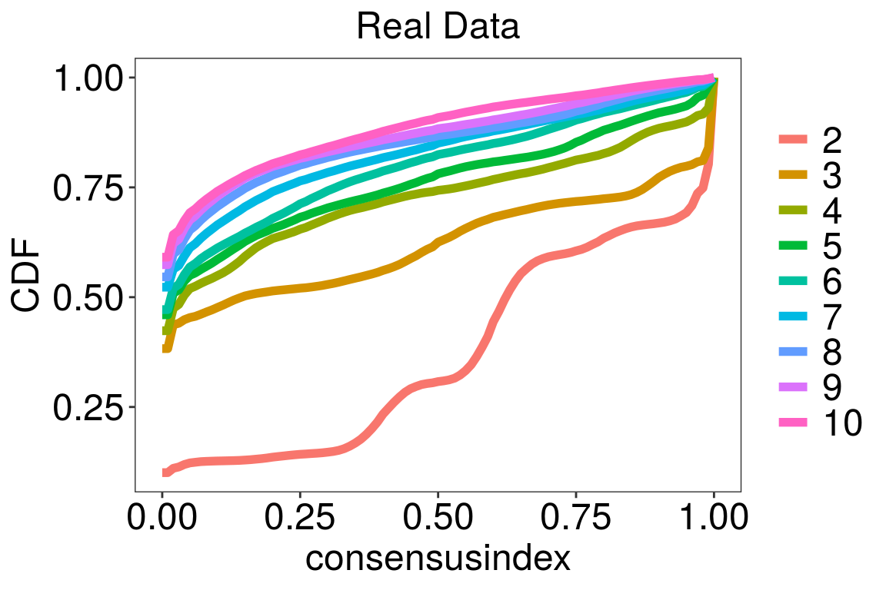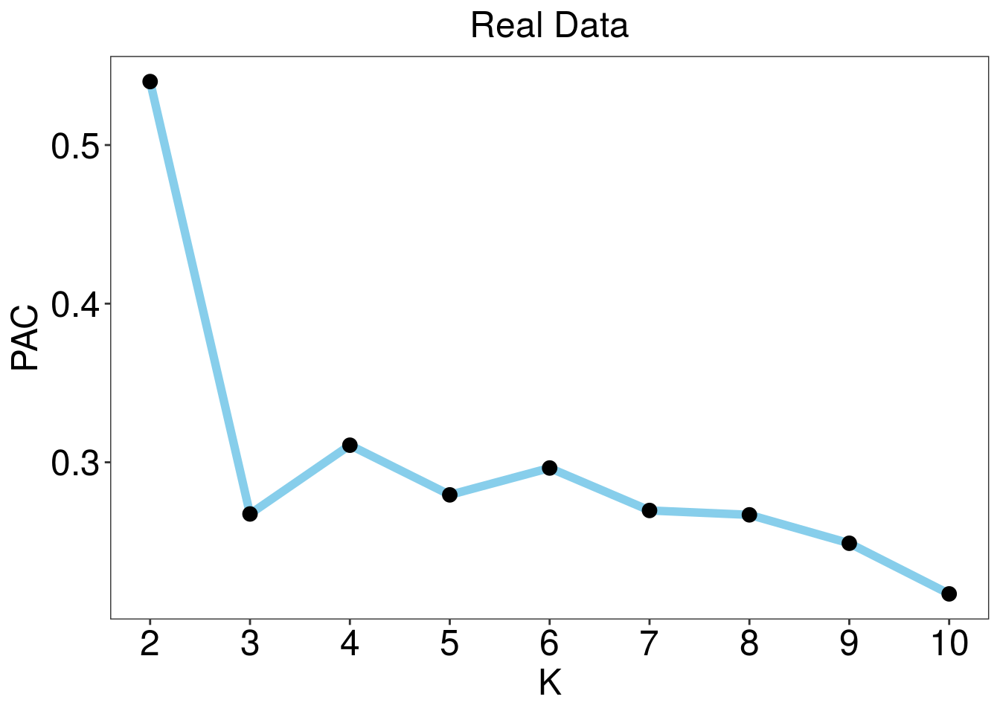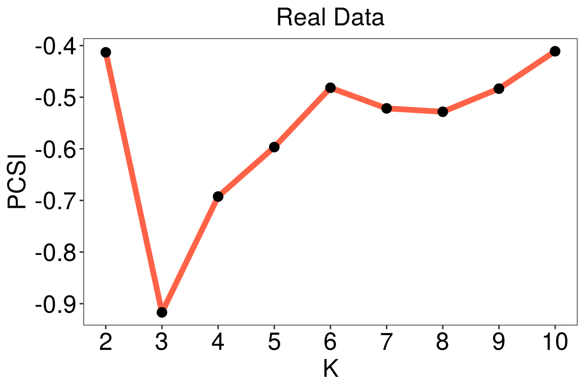
cc_ids <- cc$realdataresults[[3]]$assignments
cc_cols <- brewer.pal(length(unique(cc_ids)), "Set2")
names(cc_cols) <- unique(cc_ids)row_anno <- rowAnnotation(
show_annotation_name = FALSE,
df = data.frame(consensus_id = cc_ids),
col = list(consensus_id = cc_cols))
brks <- .get_brks(assay(lfc[de_gs, ]), 0.5)
cols <- colorRamp2(brks, hm_cols)
.plot_hm(lfc[de_gs, ], cols, brks, col_anno, row_anno, cc_ids, row_title = NULL)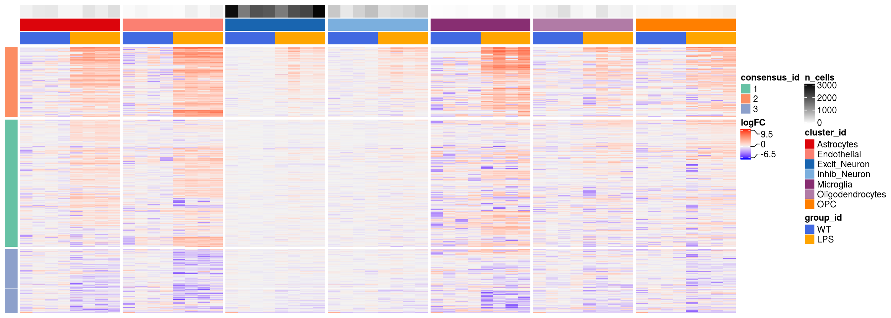
The pattern is very similar across cell subtypes of a given class, but there is also a striking similarity across all cell types, although neurons react much more mildly.
GO over-representation analysis of clusters
go <- lapply(split(names(cc_ids), cc_ids), function(gs) {
ss <- strsplit(gs, ".", fixed = TRUE)
fs <- unique(sapply(ss, .subset, 2))
l <- as.numeric(rowData(sce)$feature %in% fs)
names(l) <- rowData(sce)$feature
go <- new("topGOdata",
ontology = "BP",
allGenes = l,
geneSel = function(u) u == 1,
annot = annFUN.org,
mapping = "org.Mm.eg.db",
ID = "symbol")
res <- runTest(go, algorithm = "classic", statistic = "fisher")
GenTable(go, classicFisher = res, orderBy = "classicFisher", topNodes = 10)
})Conserved gene-cluster across cell types
go[[3]] GO.ID Term Annotated Significant
1 GO:0046942 carboxylic acid transport 164 15
2 GO:0015849 organic acid transport 165 15
3 GO:0015711 organic anion transport 221 17
4 GO:0006820 anion transport 295 19
5 GO:0015721 bile acid and bile salt transport 3 3
6 GO:0015718 monocarboxylic acid transport 71 9
7 GO:0006811 ion transport 918 37
8 GO:0048856 anatomical structure development 3241 88
9 GO:0010646 regulation of cell communication 1988 60
10 GO:0007154 cell communication 3089 84
Expected classicFisher
1 3.20 6.8e-07
2 3.22 7.4e-07
3 4.31 1.4e-06
4 5.76 4.7e-06
5 0.06 7.3e-06
6 1.39 9.0e-06
7 17.92 1.5e-05
8 63.27 0.00012
9 38.81 0.00018
10 60.30 0.00019The core response across all cell types is an upregulation of defense response genes, in particular, genes related to the response to cytokine and bacterium. We look specifically at the ‘response to bacterium’ genes:
rbg <- mget("GO:0009617", org.Mm.egGO2ALLEGS)[[1]]
rbg <- unique(unlist(mget(rbg, org.Mm.egSYMBOL)))
rbg <- sapply(rbg, grep, rowData(sce)$feature)
rbg <- rownames(sce)[unlist(rbg)]
rbg <- intersect(rbg, de_gs)
brks <- .get_brks(assay(lfc[rbg, ]), 0.5)
cols <- colorRamp2(brks, hm_cols)
.plot_hm(lfc[rbg, ], cols, brks, col_anno)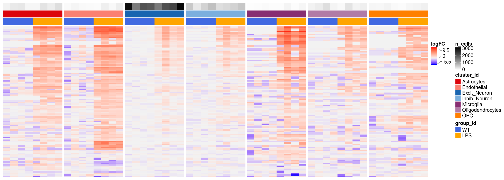
Finally, a fairly specific GO term that comes up regularly in the camera analysis:
set <- msigdbr(species = "Mus musculus")
set <- set[set$gs_name == "GO_CHEMOKINE_RECEPTOR_BINDING", ]
idx <- match(set$gene_symbol, rowData(sce)$feature, nomatch = 0)
brks <- .get_brks(assay(lfc[idx, ]), 0.5)
cols <- colorRamp2(brks, hm_cols)
.plot_hm(lfc[idx, ], cols, brks, col_anno, row_nms = TRUE,
col_title = "DE genes related to chemokine receptor binding")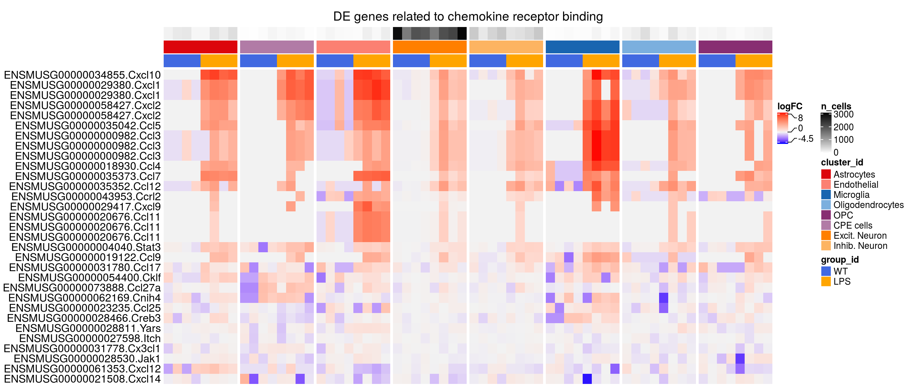
Cell-level linear decomposition
Q2: Are the changes homogeneous across cells of a given type, or do they affect a subset of the cells?
To understand whether alterations homogeneously affect all cells, or a subset of the cells, we plot, for each cell type, the distribution of the cells’ position on the first component of a PCA based on the DEGs.
Since neurons have few DEGs, we use the union of DEGs of the cell type (e.g. all excitatory neurons):
cs_by_k <- split(colnames(sce), sce$cluster_id)
ld <- lapply(kids, function(k) {
# subset SCE to inlcude
# - genes that are DE in cluster k
# - cells that have been assigned to cluster k
gs <- de_gs_by_k[[k]]
cs <- cs_by_k[[k]]
es <- logcounts(sce[gs, cs])
# decompose values as a linear combination of the group's logFCs
ld <- t(es) %*% tbl_fil[[k]]$logFC
# assure values are comparable across clusters
ld[, 1] / max(ld)
}) %>% unlist %>% set_names(unlist(cs_by_k))
dim_red <- do.call(cbind, reducedDims(sce))
gg_df <- data.frame(colData(sce), ld = ld[colnames(sce)], dim_red)Violins by cluster-sample
ggplot(gg_df, aes(x = sample_id, y = ld, fill = group_id)) +
facet_wrap("cluster_id", scales = "free_y", ncol = 7) +
scale_fill_manual(values = gcols) + geom_violin() +
geom_boxplot(width = 0.1, outlier.size = 0.5, show.legend = FALSE) +
labs(x = NULL, y = "effect coefficient") + theme_light() +
theme(aspect.ratio = 1, panel.grid.minor = element_blank(),
axis.ticks=element_blank(), axis.text.x = element_blank())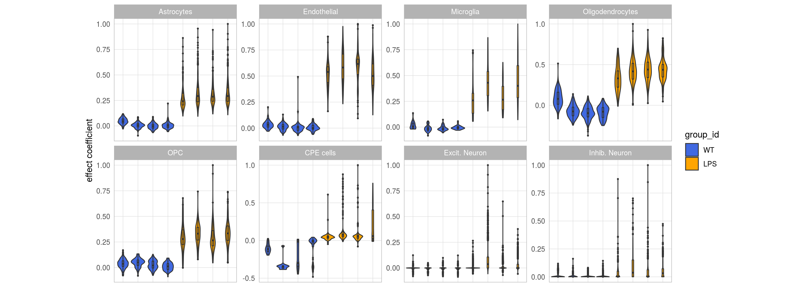
For endothelial and most glial cells, virtually all cells appear to react similarly, with a clear separation between groups, although the larger spread of LPS-treated populations suggests that some cells are more affected than others. Instead, in neurons it appears that a fairly large proportion of the cells are hardly affected.
UMAP cell embeddings
ggplot(gg_df, aes(x = UMAP_1, y = UMAP_2, col = ld)) +
geom_point(alpha = 0.4, size = 0.8) +
facet_wrap("sample_id", ncol = 4) +
theme_void() + theme(aspect.ratio = 1)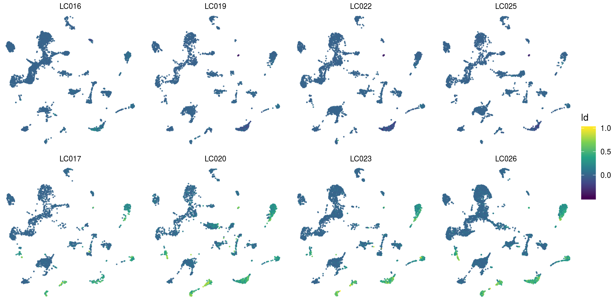
As a proxy for citotoxicity, we check whether there is a relationship of the effect coefficient with the proportion of mitochondrial RNA:
Effect coefs. vs. % mitochondrial
ggplot(gg_df, aes(x = ld, y = pct_counts_Mt, col = group_id)) +
geom_point() + facet_wrap("cluster_id", scales = "free", ncol = 7) +
theme(aspect.ratio = 1)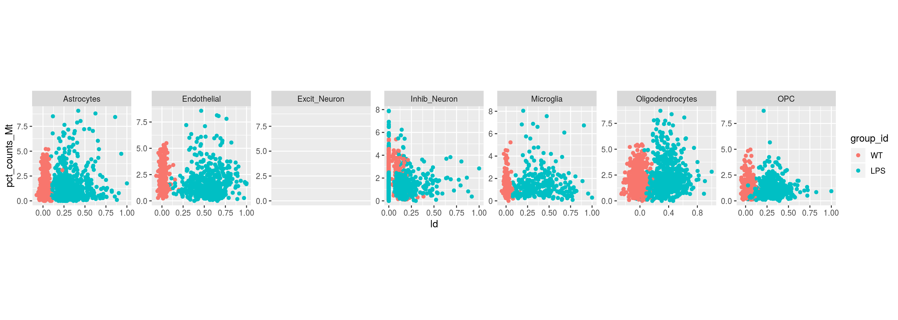
gg_df[gg_df$group_id == "LPS", ] %>%
ggplot(aes(x = ld, y = pct_counts_Mt)) +
geom_point() + geom_density_2d() +
facet_wrap("cluster_id", scales = "free", ncol = 7) +
xlab("effect coefficient") + ggtitle("Treated samples only") +
theme(aspect.ratio = 1, axis.text = element_blank(), axis.ticks = element_blank())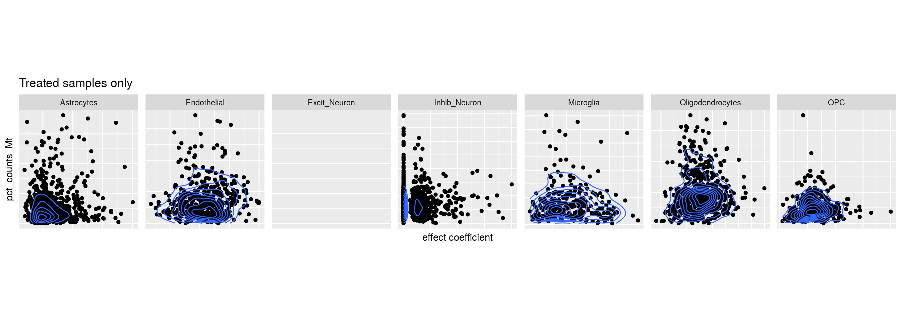
There isn’t much correlation, but in excitatory neurons (6) there might be a rough association between the amount of mitochondrial RNA and the degree to which a cell is affected - in the others if anything it’s the opposite.
Effect coefs. vs. library sizes
The relationship with library size is worrying:
gg_df[gg_df$group_id == "LPS", ] %>%
ggplot(aes(x = ld, y = log10_total_counts)) +
geom_point() + geom_density_2d() +
facet_wrap("cluster_id", scales = "free", ncol = 7) +
xlab("effect coefficient") + ggtitle("Treated samples only") +
theme(aspect.ratio = 1, axis.text = element_blank(), axis.ticks = element_blank())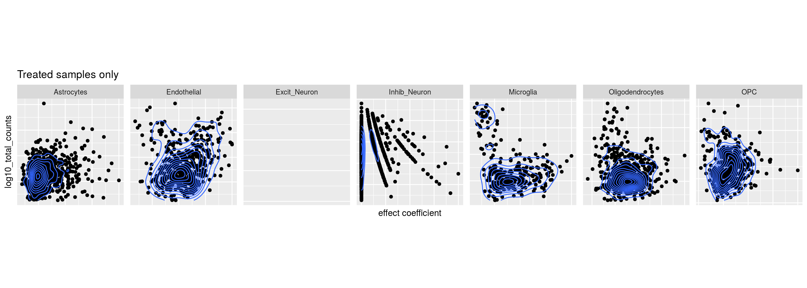
In neurons, when a cell has more reads it tends to be less affected by the treatment. A possible explanation for this would be that other cell types secrete a lot of RNA which is catched in droplets along with the cells, and when a cell is small their presence is larger… So perhaps the global signature we see is in fact an artefact?
Expression of LPS response genes
The LPS receptor Cd14, various chemokine receptors and interferon regulatory factors, as well as the primiary transcriptional response genes Cxcl2 and Tnf, are all upregulated across cell types, suggesting that all cells sense threat. Tnf, which mediates the cytotoxic effect of LPS, is upregulated in a statistically-significant manner only in microglia (where it is also more abundant), but there is a trend in across all cell types, and the low detection rate prevents us from drawing clear conclusions. Various members of the interferon response and Nf-kb pathways are similarly upregulated across cell types. However, notable differences suggest distinct modalities of response orchestrated across cell types. While endothelial and glial cells upregulate several components of the Nf-\(\kappa K\)b (Rela, Relb) and Stat pathways (Stat1, Stat2, Stat3), only part of this response (chiefly Stat3 and to a lower extent Stat1) is visible in neurons. Only astrocytes (and possibly OPCs) show an upregulation of Tirap, involved in the the signal transduction of the Toll-like receptors, while only microglia upregulate Traf3 and Traf6. The LPS-induced TNF Factor (Litaf) and the early response gene Ptgs1 are upregulated only in endothelial cells. Endothelial cells and microglia upregulate Dusp1 and Dusp16, which are expected to dephosphorylate the MAPK1/10. Finally, while the immediate early stress response genes Fos, Jun and Junb are strongly upregulated in astrocytes, endothelial cells and OPCs, they show no such trend in neurons – in fact, Fos suprisingly appears downregulated by neurons upon LPS exposure, along with another important immediate early gene, Egr1.
fs <- c("Tirap", "Jun", "Fos", "Cd83", "Traf6", "Traf3", "Sp3", "Litaf", "Egr1",
"Rela", "Ptgs2", "Junb", "Relb", "Cxcl2", "Tnf", "Cd14", "Cxcl10", "Irf7",
"Irf1", "Ccl5", "Tlr2", "Irf9", "Stat9", "Stat3", "Nbkbia", "Stat1",
"Stat2", "Fkbp5", "Gpx1", "Abca1", "Tnfrsf1a", "Dusp1", "Dusp16")
m <- sapply(fs, match, rowData(sce)$feature, nomatch = 0)
brks <- .get_brks(assay(lfc[m, ]), 0.5)
cols <- colorRamp2(brks, hm_cols)
.plot_hm(lfc[m, ], cols, brks, col_anno, row_nms = TRUE)
| Version | Author | Date |
|---|---|---|
| ada6ab0 | Pierre-Luc Germain | 2019-07-08 |
Tnf
g <- "ENSMUSG00000024401.Tnf"
es <- as.numeric(logcounts(sce[g, ]))
gg_df <- data.frame(colData(sce), expression = es)
ggplot(gg_df, aes(x = sample_id, y = expression, fill = group_id)) +
facet_wrap("cluster_id", ncol = 7) + geom_violin() +
theme(aspect.ratio = 1, axis.text.x = element_blank(), axis.ticks.x = element_blank())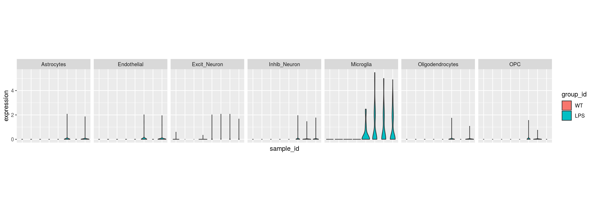
Some notes
- There seems to be hardly any difference between the different clusters of inhibitory and excitatory neurons; therefore, after having shown this (e.g. through the first heatmap here), we could proceed with the rest using only the 7 main cell types.
- The molecular pathways from the receptors to TNF-alpha activity are protein signaling pathways, not transcriptional pathways (though downstream it gets transcriptional, and there’s a transcriptional feed-forward loop at different steps). One should therefore remain cautious of drawing conclusions from RNA levels.
- With this caveat in mind, I was personally surprised to see much of the canonical response across all cell types, since I thought that most of it was happening in cells of the hematopoietic system and a few other cell types here and there. Of course, it could still be that this is non-cell-autonomous (secondary response mediated by other cell types), but as mentioned earlier it might also be contamination from floating RNA. It might be worth having a quick input of an immunologist on this (I’d know someone in case): perhaps the response in neurons is normal, but if it’s unexpected then I guess one would need to investigate the possibility of contamination (going back to excluded droplets, and doing something like SoupX)…
sessionInfo()R version 3.6.0 (2019-04-26)
Platform: x86_64-pc-linux-gnu (64-bit)
Running under: Ubuntu 16.04.5 LTS
Matrix products: default
BLAS: /usr/local/R/R-3.6.0/lib/libRblas.so
LAPACK: /usr/local/R/R-3.6.0/lib/libRlapack.so
locale:
[1] LC_CTYPE=en_CA.UTF-8 LC_NUMERIC=C
[3] LC_TIME=en_CA.UTF-8 LC_COLLATE=en_CA.UTF-8
[5] LC_MONETARY=en_CA.UTF-8 LC_MESSAGES=en_CA.UTF-8
[7] LC_PAPER=en_CA.UTF-8 LC_NAME=C
[9] LC_ADDRESS=C LC_TELEPHONE=C
[11] LC_MEASUREMENT=en_CA.UTF-8 LC_IDENTIFICATION=C
attached base packages:
[1] grid parallel stats4 stats graphics grDevices utils
[8] datasets methods base
other attached packages:
[1] purrr_0.3.2 org.Mm.eg.db_3.8.2
[3] topGO_2.36.0 SparseM_1.77
[5] GO.db_3.8.2 graph_1.62.0
[7] SingleCellExperiment_1.6.0 SummarizedExperiment_1.14.0
[9] DelayedArray_0.10.0 BiocParallel_1.18.0
[11] matrixStats_0.54.0 GenomicRanges_1.36.0
[13] GenomeInfoDb_1.20.0 RColorBrewer_1.1-2
[15] muscat_0.99.10 msigdbr_6.2.1
[17] tibble_2.1.3 M3C_1.6.0
[19] ggplot2_3.2.0 edgeR_3.26.5
[21] limma_3.40.2 dplyr_0.8.3
[23] ComplexHeatmap_2.0.0 circlize_0.4.6
[25] AnnotationDbi_1.46.0 IRanges_2.18.1
[27] S4Vectors_0.22.0 Biobase_2.44.0
[29] BiocGenerics_0.30.0 BiocStyle_2.12.0
loaded via a namespace (and not attached):
[1] tidyr_0.8.3 pkgmaker_0.27
[3] acepack_1.4.1 bit64_0.9-7
[5] knitr_1.23 multcomp_1.4-10
[7] irlba_2.3.3 data.table_1.12.2
[9] rpart_4.1-15 RCurl_1.95-4.12
[11] doParallel_1.0.14 flowCore_1.50.0
[13] snow_0.4-3 TH.data_1.0-10
[15] RSQLite_2.1.1 future_1.14.0
[17] bit_1.1-14 httpuv_1.5.1
[19] assertthat_0.2.1 viridis_0.5.1
[21] xfun_0.8 hms_0.5.0
[23] evaluate_0.14 promises_1.0.1
[25] DEoptimR_1.0-8 progress_1.2.2
[27] readxl_1.3.1 caTools_1.17.1.2
[29] dendextend_1.12.0 igraph_1.2.4.1
[31] DBI_1.0.0 geneplotter_1.62.0
[33] CATALYST_1.8.5 htmlwidgets_1.3
[35] backports_1.1.4 annotate_1.62.0
[37] gridBase_0.4-7 vctrs_0.2.0
[39] abind_1.4-5 withr_2.1.2
[41] grr_0.9.5 robustbase_0.93-5
[43] checkmate_1.9.4 sctransform_0.2.0
[45] prettyunits_1.0.2 scran_1.12.1
[47] cluster_2.1.0 lazyeval_0.2.2
[49] crayon_1.3.4 drc_3.0-1
[51] genefilter_1.66.0 labeling_0.3
[53] pkgconfig_2.0.2 nlme_3.1-140
[55] vipor_0.4.5 blme_1.0-4
[57] nnet_7.3-12 rlang_0.4.0
[59] globals_0.12.4 sandwich_2.5-1
[61] registry_0.5-1 doSNOW_1.0.16
[63] rsvd_1.0.1 cellranger_1.1.0
[65] rprojroot_1.3-2 rngtools_1.4
[67] Matrix_1.2-17 carData_3.0-2
[69] zoo_1.8-6 boot_1.3-23
[71] Matrix.utils_0.9.7 base64enc_0.1-3
[73] beeswarm_0.2.3 ggridges_0.5.1
[75] whisker_0.3-2 GlobalOptions_0.1.0
[77] png_0.1-7 viridisLite_0.3.0
[79] rjson_0.2.20 bitops_1.0-6
[81] shinydashboard_0.7.1 ConsensusClusterPlus_1.48.0
[83] KernSmooth_2.23-15 blob_1.2.0
[85] DelayedMatrixStats_1.6.0 workflowr_1.4.0
[87] shape_1.4.4 stringr_1.4.0
[89] scales_1.0.0 memoise_1.1.0
[91] magrittr_1.5 plyr_1.8.4
[93] gplots_3.0.1.1 bibtex_0.4.2
[95] gdata_2.18.0 zlibbioc_1.30.0
[97] compiler_3.6.0 dqrng_0.2.1
[99] plotrix_3.7-6 clue_0.3-57
[101] lme4_1.1-21 DESeq2_1.24.0
[103] rrcov_1.4-7 XVector_0.24.0
[105] lmerTest_3.1-0 listenv_0.7.0
[107] TMB_1.7.15 htmlTable_1.13.1
[109] Formula_1.2-3 FlowSOM_1.16.0
[111] MASS_7.3-51.4 tidyselect_0.2.5
[113] forcats_0.4.0 stringi_1.4.3
[115] shinyBS_0.61 highr_0.8
[117] yaml_2.2.0 BiocSingular_1.0.0
[119] locfit_1.5-9.1 latticeExtra_0.6-28
[121] ggrepel_0.8.1 sigclust_1.1.0
[123] tools_3.6.0 rio_0.5.16
[125] future.apply_1.3.0 matrixcalc_1.0-3
[127] rstudioapi_0.10 foreach_1.4.4
[129] foreign_0.8-71 git2r_0.26.1
[131] gridExtra_2.3 Rtsne_0.15
[133] digest_0.6.20 BiocManager_1.30.4
[135] shiny_1.3.2 Rcpp_1.0.1
[137] car_3.0-3 later_0.8.0
[139] httr_1.4.0 colorspace_1.4-1
[141] XML_3.98-1.20 fs_1.3.1
[143] splines_3.6.0 statmod_1.4.32
[145] scater_1.12.2 plotly_4.9.0
[147] xtable_1.8-4 jsonlite_1.6
[149] nloptr_1.2.1 dynamicTreeCut_1.63-1
[151] corpcor_1.6.9 zeallot_0.1.0
[153] R6_2.4.0 Hmisc_4.2-0
[155] mime_0.7 pillar_1.4.2
[157] htmltools_0.3.6 NMF_0.21.0
[159] nnls_1.4 glue_1.3.1
[161] minqa_1.2.4 DT_0.7
[163] BiocNeighbors_1.2.0 codetools_0.2-16
[165] tsne_0.1-3 pcaPP_1.9-73
[167] mvtnorm_1.0-11 lattice_0.20-38
[169] numDeriv_2016.8-1.1 pbkrtest_0.4-7
[171] curl_3.3 ggbeeswarm_0.6.0
[173] colorRamps_2.3 gtools_3.8.1
[175] shinyjs_1.0 zip_2.0.3
[177] openxlsx_4.1.0.1 survival_2.44-1.1
[179] glmmTMB_0.2.3 rmarkdown_1.13
[181] munsell_0.5.0 GetoptLong_0.1.7
[183] GenomeInfoDbData_1.2.1 iterators_1.0.10
[185] variancePartition_1.14.0 haven_2.1.1
[187] reshape2_1.4.3 gtable_0.3.0